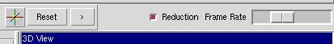

Step 5
You will notice that because of the large number of glyphs, it takes
a long time to fully render the scene. However, unless your computer
is old, it should be possible to interact with the scene with acceptable
speeds. This is because ParaView uses LOD (Level of Detail) actors to
achieve acceptable rendering times while the user is interacting with
a scene. This is accomplished by reducing the detail (number of polygons)
as the requested frame rate increases. The requested frame rate can
be changed from the toolbar. Experiment with different frame rate
settings.

Step 6
It is also possible to achieve better interactivity and a less cluttered
picture by reducing the number of data points which are glyphed.
First, remove the glyph filter by clicking Delete on the source notebook.
Last modified: Mon Oct 22 16:35:54 EDT 2001